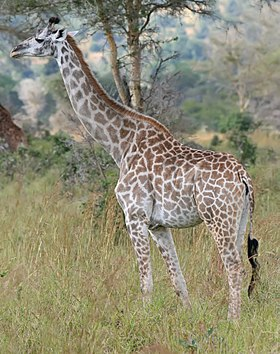

Hươu Cao Cổ
Chi Hươu cao cổ (tên khoa học Giraffa) là một chi các động vật có vú thuộc bộ Guốc chẵn, là động vật cao nhất trên cạn và động vật nhai lại lớn nhất. Nó được phân loại trong họ Giraffidae, cùng với họ hàng gần nhất còn tồn tại của nó là hươu đùi vằn. Chi có 11 loài, bao gồm loài điển hình Giraffa camelopardalis. Trong số này, có bảy loài tiền sử đã tuyệt chủng được biết đến qua các hóa thạch, còn bốn loài hiện còn sống.[1] Tuy Giraffa từng được coi là một loài hiện còn có chín phân loài, các nhà nghiên cứu ADN ty thể của Giraffa đã khám phá bốn loài riêng hiện còn sinh tồn.[2][3] Vì thế, chi Giraffa gồm các loài Giraffa giraffa (hươu cao cổ phương nam), Giraffa tippelskirchi (hươu cao cổ Maasai), Giraffa reticulata (hươu cao cổ Somalia), và Giraffa camelopardalis (hươu cao cổ phương bắc).

Hươu cao cổ có phạm vi phân bố rải rác từ Tchad ở miền bắc đến Nam Phi ở miền nam, và từ Niger ở miền tây đến Somalia ở miền đông châu Phi. Hươu cao cổ thường sống ở xavan, đồng cỏ và rừng thưa. Nguồn thức ăn chính của chúng là lá cây keo mà chúng gặm ở độ cao mà hầu hết động vật ăn cỏ khác không thể với tới. Sư tử có thể săn hươu cao cổ, và con non là mục tiêu của báo hoa mai, linh cẩu đốm và chó hoang châu Phi. Trong các trận đánh khi cổ được dùng làm vũ khí, con đực dùng cách này củng cố hệ thống cấp bậc xã hội.